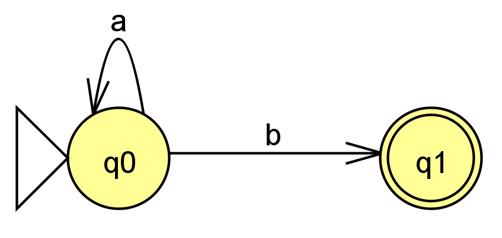
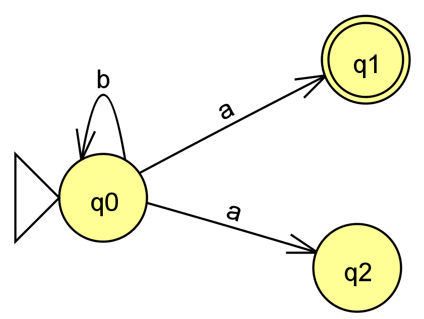

\( \varphi \) macht auch Mist!
Dieses klitzekleine Broschürchen soll eine Zusammenfassung und teilweise Ergänzung der im Informatikunterricht angefertigten Notizen sein. Quellen sind, wo anfallend, angegeben.
Dieser Text erhebt keinen Anspruch auf Vollständigkeit und möchte nur eine Vorbereitung sein! An einigen Stellen fällt der Text sehr vage und dünn aus, an diesen Stellen sind jedoch Wegweiser zu anderen Ressourcen aufgestellt.
Formale Sprachen und Automaten
Formale Sprachen und Automaten sind eng miteinander verbunden. Mit Grammatiken lassen sich beide gleichermaßen beschreiben, zusammen bilden sie das Fundament der heutigen Programmiersprachen. Während sich mit Grammatiken Sprachen erzeugen lassen, können sie mit Automaten erkannt (s. “Akzeptor”) oder verarbeitet werden (s. “Transduktor”).
Formale Sprachen
Eine formale Sprachen (gekennzeichnet durch das Symbol \( L \)) wird durch folgende Eigenschaften charakterisiert, die im Folgenden näher beschrieben werden sollen:
- Grammatik
- Syntax
- Semantik
- Wörter
Formale Sprachen und Automaten sind eng miteinander verbunden. Es ist sowohl möglich, einen Automaten nach einer formalen Sprache zu modellieren als auch umgekehrt.
Grammatik
Die Grammatik einer formalen Sprache ist das 4-Tupel \( G \):
| Definition | Beispiel | Beschreibung |
|---|---|---|
| \( G = (N, T, P, S) \) | \( L = { S \rightarrow aSb \vert \varepsilon } \) | Grammatik \( G \), die eine Sprache \( L \) definiert |
| Nichtterminalsymbole (N) | \( \{S\} \) | Zeichen, die sich beim Wortbildungsprozess ändern können/werden/müssen (z. B. Produktionen) |
| Terminalsymbole (T) | \( \{a, b, \varepsilon\} \) | Zeichen, die sich beim Wortbildungsprozess nicht mehr verändern |
| Produktion(en) (P) | \( \{S \rightarrow aSb \vert \varepsilon\} \) | Zeichen, die neue Zeichen produzieren |
| Startsymbol (S) | \( S \) | Zeichen, mit dem ein Wort beginnt (in der Regel eine Produktion) |
Syntax
Die Syntax (also Rechtschreibung) einer formalen Sprache wird durch “reguläre Ausdrucke” beschrieben. Sie gibt die Regeln an, nach der die Wörter der Sprache gebildet werden1. Die Symbole eines regulären Ausdrucks beziehen sich immer auf das zuvorstehende Zeichen.
| Symbol | Bedeutung/Semantik |
|---|---|
| \( * \) | beliebig viele |
| \( + \) | beliebig viele, aber mindestens ein mal |
| \( n^x \) | n, x mal |
| \( \vert \) | oder |
| \( \varepsilon \) | “nichts” |
Diese sind häufig in den Produktionen \( P_{i} \) von \( G \) zu finden.
Semantik
Die Semantik beschäftigt sich mit der Bedeutung der Wörter (der formalen Sprache). Die Bedeutung hängt allerdins oft von dem Kontext ab, in dem das Wort verwendet wird (Pragmatik)1.
Alphabet
Bei Automaten unterscheidet man zwischen verschiedenen Alphabeten, die sich aus unterschiedlichen Zeichen (also z. B. Buchstaben oder Zahlen, aber auch Sonderzeichen) zusammensetzen. So gibt es bei Automaten mit Kellern (z. B. NKA) zusätzlich zum Eingabealphabet \( \Sigma \) auch ein zusätzliches Kelleralphabet (oft als \( \Gamma \) bezeichnet), das angibt, welche Zeichen zulässlich in den Keller gelegt oder daraus hervorgenommen werden koennen.
Wörter bestehen aus Zeichen
Durch Aneinanderreihung von Zeichen aus dem Eingabealphabet \( \Sigma \) lassen sich so “Wörter” bilden, die Teil der Sprache \( L \) sind, die durch eine Grammatik \( G \) (die \( \Sigma \) enthält) beschrieben wird.
Automaten
Man unterscheidet in verschiedene Automatentypen1:
Akzeptor
- Entscheidet ob ein jeweiliges geg. Eingabewort in einer ebenfalls geg. Sprache \(L \) enthalten ist, gibt also einen booleschen Wert zurück
- Das Wort ist akzeptiert (also enthalten), wenn der aktuelle Zustand bei Erreichen des Endes des Eingabewortes ein Endzustand ist
- Der Automat endet nicht sobald ein Endzustand erreicht ist, sondern nur, wenn auch das Eingabewort zuende ist
Transduktor
- Bei einem jeweiligen Zustandsübergang erfolgt auch eine Ausgabe (z. B. Veränderung des Eingabebands)
- Die Ausgabe erfolgt nicht als boolescher Wert am Ende der Ausführung, sondern bereits währenddessen
Wozu Automaten?
Betrachten wir also nun eine Grammatik, die Dezimalzahlen beschreibt:
\[ \begin{array}{l} \begin{equation} G = (N, T, P, S)\\ \\ N = \{0, 1, 2, \dots, 9, ‘,’\}\\ T = \{\varepsilon\}\\ P = \{X \rightarrow (A,A)\vert\varepsilon, A \rightarrow 0\vert1\vert2\vert\dots\vert9\vert\varepsilon\}\\ S = X\nonumber \end{equation} \end{array} \]
Das Eingabealphabet eines möglichen Automaten, der nach dieser Grammatik \( G \) modelliert ist, besäße ein Eingabealphabet, das den Nichtterminalsymbolen \( N \) der Grammatik \( G \) entspräche, also:
\[ \begin{equation} \Sigma = N = \{0, 1, 2, \dots, 9, ‘,’\}\nonumber \end{equation} \]
Daraus lassen sich dann verschiedene Wörter für die Eingabe des Automaten formen, zum Beispiel:
\[ \begin{equation} \begin{array}{l} E = \{,,,,; 023;3244,23; 23,32; 234,,,,234 \} \end{array} \end{equation} \]
Unsere Sprache soll allerdings valide Dezimalzahlen beschreiben, und mit der Grammatik lassen sich auch solche erzeugen – wie jedoch prüfen wir, ob ein bereits bestehendes Wort (das sich nur aus Zeichen aus \( \Sigma \) bzw. \( N \) zusammensetzt) ebenfalls Teil der Sprache ist? Natürlich könnten wir versuchen mit den Produktionen \( P \) der Grammatik das Wort nachzubilden, allerdings wäre dieser Prozess sehr aufwändig und fehlerbehaftet. Hier kommen nun die Automaten ins Spiel: Mit einem Automaten, der entsprechend der Grammatik \( G \) modelliert ist, können wir diesen “Nachbildeprozess” umkehren und automatisieren. Anstatt also das Wort mittels \( P \) nachzubauen, zersetzen wir es anhand der Semantik der Produktionen aus \( P \).
Beispiel: Die Sprache a*b
Als Beispiel soll eine Sprache \( L \) dienen, deren Worte aus beliebig vielen “a” gefolgt von genau einem “b” bestehen soll, also:
\[ \begin{equation} L = \{ab, aab, aaab, \dots\}.\nonumber \end{equation} \]
Eine solche Sprache lässt sich mit folgender Grammatik beschreiben:
\[ \begin{equation} \begin{array}{l} G = (N, T, P, S)\\ \\ N = \{a, b\}\\ T = \{\varepsilon\}\\ P = \{X \rightarrow aAb, A \rightarrow a\vert\varepsilon\}\\ S = X\nonumber \end{array} \end{equation} \]
Eingabeworte könnten jedoch auch folgende sein:
\[ \begin{equation} E = \{aaab, aaaabbbbbbbb, ba, bbaa, baa\}\nonumber \end{equation} \]
Mittels eines deterministischen endlichen Automaten, der nach \( G \) modelliert ist, können wir nun die Eingabeworte auf Zugehörigkeit zur Sprache \( L \) prüfen:

In Worten beschrieben:
- Solange das Zeichen “a” vom Eingabeband gelesen wird, bleibe in Zustand \( q_{0} \).
- Wird Zeichen “b” gelesen, wechsle in Zustand \( q_{1} \). Ist dies das letzte Eingabezeichen, so ist das Wort in der Sprache akzeptiert/enthalten.
- Ist es nicht das letzte Eingabezeichen, aber der Endzustand erreicht, so ist das Wort nicht in der Sprache enthalten.
- Ist es das letzte Eingabezeichen aber der Endzustand ist erreicht, so ist das Wort ebenfalls nicht in der Sprache enthalten.
Deterministischer endlicher Automat (DEA)
- gehört zur Kategorie der Akzeptoren: Wort in Sprache akzeptiert, wenn das Eingabeband leer ist und der aktuelle Zustand ein Endzustand ist
- zu Englisch: “deterministic finite automaton”
- Deterministisch: Bei gleichen Eingabewerten erfolgt stets die gleiche Ausgabe/das gleiche Ergebnis
- besteht zu jeder Zeit in der Ausführung nur eine Fortsetzungsmöglichkeit dieser
- Befindet sich stets in genau einem Zustand
Formaler Aufbau
Der DEA wird durch ein 5-Tupel \( D = (Z, \Sigma, \delta, q_{0}, E) \) beschrieben:
| Element | Bedeutung |
|---|---|
| \( Z \) | Endliche, nichtleere Zustandsmenge |
| \( \Sigma \) | Eingabealphabet |
| \( \delta \) | Übergangsfunktion |
| \( q_{0} \in Z \) | Startzustand |
| \( E \subseteq Z \) | Menge an Endzuständen |
Übergangsfunktion
\[ \begin{equation} \delta: Z \times A \rightarrow Z’ \end{equation} \]
In Worten: Wird in dem aktuellen Zustand \(Z \) das Zeichen \( A \) gelesen, so geht der Automat in den nächsten Zustand \( Z’ \) über.
Nichtdeterministischer endlicher Automat (NEA)1
Im Gegensatz zum DEA ist bei einem geg. Eingabezeichen die Fortsetzung der Ausführung nicht eindeutig (d. h., es ist nicht klar, welcher Übergang gewählt werden soll):

Aus dem Nichtderterminismus folgt:
- Ein NEA kann in mehreren Zuständen zugleich sein
- Es kann mehrere Start- und Endzustände geben
- Eine eindeutige Definition der Übergangsfunktion ist nicht möglich
Formaler Aufbau
Ein NEA ist ebenfalls ein 5-Tupel \( N = (Z, \Sigma, \delta, q_{0}, E) \), dessen Elemente wie folgt definiert sind:
| Element | Bedeutung |
|---|---|
| \( Z ) | Endliche, nichtleere Zustandsmenge |
| \( \Sigma \) | Eingabealphabet |
| \( \delta \) | Übergangsfunktion |
| \( q_{0} \in Z \) | Startzustand |
| \( E \subseteq Z \) | Menge an Endzuständen |
Umwandlung eines NEA in einen DEA
Das Video von Christian Spannagel zeigt die Transformation recht detailliert:
Deterministischer Kellerautomat (DKA, engl. PDA)
Formaler Aufbau
Ein PDA wird durch das 7-Tupel \( K = (Q, \Sigma, \Gamma, \delta, q_{0}, \#, E) \) beschrieben:
| Element | Bedeutung |
|---|---|
| \( Z \) | Zustandsmenge |
| \( \Sigma \) | Eingabealphabet |
| \( \Gamma \) | Kelleralphabet |
| \( \delta \) | Übergangsfunktion |
| \( q_{0} \in Z \) | Startzustand |
| \( \# \in \Gamma \) | Anfangssymbol im Keller |
| \( E \subseteq Q \) | Menge von Endzuständen |
Die Übergangsfunktion
Im Folgenden sei \( \Gamma* \) die Menge der Wörter die sich mit dem Alphabet \( \Gamma \) bilden lassen.
\[ \begin{equation} \delta: Z \times (\Sigma \cup \{\varepsilon\}) \times \Gamma \rightarrow P(Z \times \Gamma*)\nonumber \end{equation} \]
Die Übergangsfunktion drückt also folgenden Zusammenhang aus: Befindet sich der Automat in Zustand \( Z \), so geht er abhängig von einem Zeichen vom Eingabeband und dem obersten Element im Keller über in einen neuen Zustand \( Z’ \) und legt ein neues Zeichen aus dem Kelleralphabet in den Keller (das auch \( \varepsilon \) sein kann).
Nichtdeterministischer Kellerautomat (NKA)
Die Eigenschaften des NEA treffen gleichermaßen zu, jedoch besitzt der NKA zusätzlich einen Keller, der wie ein Stapel bzw. “stack” funktioniert: Bei jedem Übergang wird ein Element \( e_{raus} \) aus dem Keller geholt und ein Element \( e_{rein} \) wieder in diesen hineingelegt. Dabei sei nicht ausgeschlossen dass:
- \( e_{raus} = e_{rein} \) (das oberste Kellerelement bleibt unverändert)
- \( e_{rein} = \varepsilon \) (prinzipiell: das oberste Kellerelement wird “gelöscht”)
Formaler Aufbau
Ein NKA wird durch das 6-Tupel \( K = (Q, \Sigma, \Gamma, \delta, q_{0}, \#) \) beschrieben:
| Element | Bedeutung |
|---|---|
| \( Z \) | Zustandsmenge |
| \( \Sigma \) | Eingabealphabet |
| \( \Gamma \) | Kelleralphabet |
| \( \delta \) | Übergangsfunktion |
| \( q_{0} \in Z \) | Startzustand |
| \( \# \in \Gamma \) | Anfangssymbol im Keller |
Die Übergangsfunktion
Die Übergangsfunktion \( \delta \) (derer es mehrere geben kann, \( \delta_{0}, \delta_{1}, \dots, \delta_{n} \)) ist grundlegend wie folgt definiert:
\[ \begin{equation} \delta: q_{n} \times \Sigma \times \Gamma \rightarrow q_{a} \times \Gamma*.\nonumber \end{equation} \]
\( \delta \) ist mit dem momentanen Zustand \( q_{n} \) ( \( q_{n} \in Z \)), dem Symbol dass sich im Keller am obersten befindet \( \Gamma \) und dem momentanen Zeichen unter dem Lesekopf, also dem aktuell betrachteten Zeichen auf dem Eingabeband (das auch \( \varepsilon \), also leer sein kann), parametrisiert. Sie produziert als Ergebnis einen neuen Zustand \( q_{a} \) und ein Zeichen, das in den Keller gelegt wird.
Warum ist \( \Sigma \ne \Gamma \)?
Obwohl \( \Sigma = \Gamma \) sein kann, ist dies möglicherweise nicht gewünscht. Dadurch dass diese Vorraussetzung nicht gilt, wird Flexibilität gewonnen; so können beispielsweise Zeichen in den Keller gelegt werden, die nicht auf dem Eingabeband zu finden sind und umgekehrt.
Warum gibt es \( \# \)?
Zur Erinnerung: \( \# \) ist das Anfangssymbol im Keller. Wird also ein Zeichen aus dem Keller genommen und es entpuppt sich als \( \# \), so ist dies als “der Keller ist leer”-Signal zu interpretieren.
Huch, wo sind die Endzustände?1
Bei NKAs ist es möglich, auf die Definition der Endzustände zu verzichen; stattdessen definiert man, dass der Automat das Eingabewort akzeptiert, wenn nach der Abarbeitung des Eingabewortes auf dem Eingabeband der Keller leer ist.
Turingmaschine
Formaler Aufbau
Das theoretische Modell einer Turingmaschine besteht aus einem 7-Tupel \( M = (Z, \Sigma, \Gamma, \delta, z_{0}, \square, E) \):
| Element | Bedeutung |
|---|---|
| \( Z \) | endliche Zustandsmenge |
| \( \Sigma \) | Eingabealphabet |
| \( \Gamma \supset \Sigma \) | Arbeitsalphabet |
| \( \delta \) | Übergangsfunktion(en) |
| \( z_{0} \in Z \) | Startzustand |
| \( \square \in \Gamma, Z \) | Leerzeichen |
| \( E \subseteq Z \) | endliche Endzustandsmenge |
Die Übergangsfunktion
Die Übergangsfunktion \( \delta \) ist wie folgt definiert:
\[ \begin{equation} \delta: Z \times \Gamma \rightarrow Z’ \times \Gamma’ \times \{l, r, n\}.\nonumber \end{equation} \]
Ihre Parameter sind sind ein Zustand \( Z \), also der Zustand, in dem sich die Maschine momentan befindet und ein Zeichen des Arbeitsalphabets \( \Gamma \), das von einem Eingabeband gelesen wird. Die Maschine geht dann, basierend bzw. abhängig von den Werten der Parameter in einen neuen Zustand \( Z’ \) über und schreibt an die Stelle des Zeichens \( \Gamma \) das neue Zeichen \( \Gamma’ \). Des weiteren wird der Lese-Schreibe-Kopf der Maschine bewegt oder verbleibt in Ruhelage (\( {l=links, r=rechts, n=Stillstand} \)). Dabei sei nicht ausgeschlossen, dass \( Z = Z’ \) und/oder \( \Gamma = \Gamma’ \).
Programmiersprachen
Programmiersprachen kommen in vielen verschieden Variationen, Eigenheiten und Gemeinsamkeiten. Hier sollen zunächst einige Gemeinsamkeiten aufgeführt und mit durch das gesamte Kapitel einheitlicher Terminologie beschrieben werden.
Funktionen
Funktionen sind analog zu den aus der Mathematik bekannten Funktionen: basierend auf einem (oder mehreren) Eingabewert(en) wird ein Ausgabewert errechnet. Besonderheiten sind hierbei, zum einen, dass bei mehrfachem Aufrufen der Funktion mit gleichem Eingabewert nicht unbedingt das gleiche Ergebnis geliefert werden muss und, im Gegensatz zur Schulmathematik, mehrere Eingabewerte anstatt nur einem üblich sind.
Ausdrücke (engl. “expressions”)
Ausdrücke oder Expressions sind sehr eng mit Termen aus der Mathematik verwandt: Wie diese besitzen auch sie ein errechenbares Ergebnis und folgen bestimmten Regeln und Gesetzen (wie z. B. das Distributivgesetz oder “Punkt vor Strich”). Ausdrücke können wie echte mathematische Terme aussehen:
6 + 3 * (3 + 4)3 * 7 + 3
Wie in mathematischen Termen können Funktionen auch in Ausdrücken auftauchen (denn sie liefern schliesslich ein Ergebnis und bestehen schlussendlich selbst aus einen Term):
6 + f(3)
Reichweite (engl. “scope”)
Das “scope” oder bzw. die Reichweite legt fest, in welchem Teil eines Programms Variablen
oder Konstanten sichtbar sind. Scopes sind leicht mit Zahlenmengen zu vergleichen/zu
veranschaulichen: Definieren wir eine mathematische Funktion f, die natürliche Zahlen
\( \mathbb{N} \) als Eingabewerte erwartet:
\[ f(x) = y = x + 1; x, y \in \mathbb{N} \]
Da wir festgelegt haben, dass x und y beliebige natürliche Zahlen sein müssen, können
wir für x nicht \( \pi \) einsetzen (weil es eine reele Zahl ist), und im Term der Funktion
auch nicht nutzen, denn das Ergebnis y der Funktion ist ebenfalls als natürliche Zahl definiert.
\( \pi )) liegt ausserhalb der Reichweite der Reichweite der natürlichen Zahlen.
Hätten wir x und y als reele Zahlen definiert, so könnten wir sehr wohl auch 2 oder 1
für x einsetzen, denn die natürlichen Zahlen sind eine Teilmenge der reelen Zahlen, liegen also
in deren “Reichweite”:
TODO: Grafik mit Zahlenbereiche als Zwiebeldiagramm einfügen
Um das Zwiebeldiagramm in Pseudocode zu übertragen (ein neues, geschachteltes Scope wird in Java mit {
und } ein- und ausgeleitet, oder stattdessen mit Einrücken in Python):
{
// 1: natürliche Zahlen
{
// 2: reelle Zahlen
{
// 3: komplexe Zahlen
}
}
}
Huch, das ist ja andersrum? Genau! Das “allwissende” Scope/Reichweite ist das am tiefsten Eingerückte bzw. das am meisten Geschachtelte.
Anders als bei der Zahlenmengenanalogie beinhaltet es nicht die anderen Scopes, sondern wird von den anderen beinhaltet.
Ein Wert der in Scope 1 definiert wurde, ist also auch in Scope 2 und 3 sichtbar, andersherum ist ein Wert der in Scope 3
definiert wurde nicht in den Scopes 2 und 3 sichtbar.
Also gilt Folgendes:
{
int i = 0;
{
int j = 0;
i = 1; // ok!
{
j = 5; // ok!
i = 3; // auch ok!
int x = 0;
}
x = 5; // ERROR! auf das geschachtelte Scope kann nicht zugegriffen werden!
j = 1; // ok, im gleichen Scope
}
}
Seiteneffekte
Funktionen müssen nicht (in allen Programmiersprachen) im mathematischen Sinne rein sein, also bei mehrfachem Aufrufen der gleichen Funktion mit gleichem Eingabewert das gleiche Ergebnis liefern. Seiteneffekte können zum Beispiel das ändern von Werten sein (Vorgriff auf Python):
# ist im hauptscope, also in jedem anderen Scope im Programm sichtbar
muhaha_böse = true
def gib_mir_einen_wert():
if muhaha_böse == true:
muhaha_böse = false # der Seiteneffekt der Funktion
return 1
else:
muhaha_böse = true # der Seiteneffekt der Funktion
return 2
wert1 = gib_mir_einen_wert() # wert1 = 1
wert2 = gib_mir_einen_wert() # wert2 = 2
wert3 = gib_mir_einen_wert() # wert3 = 1
# .....
Der Seiteneffekt der Funktion ist also die Änderung des Wertes muhaha_böse, also von
Zustand (der darüber hinaus im ganzen Programm sichtbar ist).